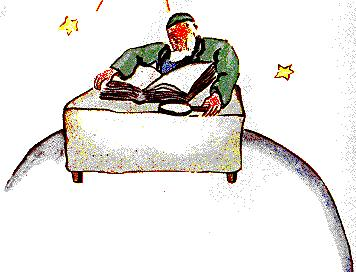

xv
An séú pláinéad, bhí sé deich n-uaire níos fairsinge. Bhí seanduine
ina chónaí ann a scríobhadh leabhair mhillteanacha mhóra.
- Féach! Seo taiscealaí chugainn! ar seisean go beo, nuair a
chonaic sé an prionsa beag.
Shuigh an prionsa beag síos ar an tábla agus tharraing sé a anáil
bomaite.
- Cá has duit? arsa an seanduine leis.
- Cén leabhar mór é sin? arsa an Prionsa beag. Cad atá ar siúl
agat anseo?
- Is tíreolaí mise, a deir an seanduine.
- Cén sórt duinc tíreolaí?

-Is duine léannta é a bhfuil a fhios aige cá bhfuil na farraigí, na
haibhneacha, na bailte móra, na sléibhte agus na gaineamhlaigh.
- Tá sé sin fíor-inspéise, arsa an prionsa beag.
Sin ceird cheartar deireadh! Agus thug sé spléachadh timpeall
ar phláinéad an tíreolaí. Ní fhaca sé riamh go dtí sin pláinéad
chomh maorga leis.
-Tásé go hálainn, an pláinéad seo agat. An bhfuilaigéan ar bith
agat?
- Cad é mar a bheadh a fhios agam sin? arsa an tireolaí.
- Uch! (Bhí díomá ar an phrionsa beag). Agus an bhfuil
sléibhte agat?
- Ní bheadh a fhios agam, arsa an tíreolaí.
- Agus bailte móra agus aibhneacha agus gaineamhlaigh?
- Ní bheadh a fhios agam sin ach oiread, arsa an tíreolaí.
- Ach is tíreolaí thú!
-Tá sin ceart,arsa an tireolaí,ach ní taiscealaí mé. Tá ganntanas
iomlán taiscealaithe orm. Ní dual do thíreolaí cuntas a dhéanamh
ar bhailte móra, ar aibhneacha, ar shléibhte, ar fharraigí, ar
aigéin agus ar ghainceamhlaigh. Is duine róthábhachtach é tíreolaí
le bheith ag spaisteoireacht thart. Ní fhágann sé a oifig. Ach
tagann taiscealaithe ar cuairt chuige ansin. Cuireann sé ceisteanna
orthu, agus scríobhann sé síos an méid is cuimhin leo. Agus más
spéis leis a ndeir duine acu, cuireann an tíreolaí fiosrú ar siúl ag
féacháil an duine ionraic é an taiscealaí.
- Cad chuige sin?
- As siocair taiscealaí a d'inseodh bréag, tharraingeodh sé an
tubaiste ar na leabhair thíreolais. Agus taiscealaí a bheadh ag ól
barraíocht mar an gcéanna.
- Cad chuige sin? a deir an prionsa beag.
- Mar go bhfeiceann meisceoirí gach rud faoi dhó. Ansin
scríobhfadh an tírcolaí síos dhá shliabh san áit nach bhfuil ach
ceann amháin.
- Tá a fhios agamsa duine, arsa an prionsa beag, a dhéanfadh
fíor-dhrochthaiscealaí.
- B'fhéidir. Mar sin, má tá an chuma air go bhfuil an taiscealaí
ionraic, déantar iniúchadh ar an rud atá fionnta aige.
- Téann sibh a bhreathnú air?
-Ní théann. Bheadh sé sin róchasta. Ach éilímid ar an taiscealaí
cruthúnais a thabhairt dúinn. Mar shampla, más sliabh mór atá
fionnta aige, éilímid air clocha móra a thabhairt ar ais chugainn
uaidh.
Leis sin tháinig corraí ar an tíreolaí.
-Ach seo, tú féin, tháinig tú ó i bhfad igcéin! Is taiscealaí tusa!
Inseoidh tú dom fá dtaobh de do phláinéad féin!
Agus d'oscail an tíreolaí a leabhar mór agus chuir bior ar a
pheann luaidhe. Mar is le peann luaidhe a bhreactar síos tuairiscí
na duaiscealaithe i dtús báire. Ní scríobhtar i ndúch iad go dtí go
gcuireann an taiscealaí na cruthúnais ar fáil.
- Lean ort mar sin,a d'iarr an tíreolaí.
-Ó, arsa an prionsa beag, nil an baile s'agamsa róspéisiúil; tá sé
an-bheag. Tá trí bholcán agam. Dhá bholcán atá beo, agus bolcán
amháin atá marbh. Ach ní fios cad a tharlódh.
- Ní fios, arsa an tíreolaí.
- Tá bláth agam chomh maith.
- Ní áirimid na bláthanna, arsa an tíreolaí.
- Cad chuige sin? Nach iad is deisc ar fad!
- Mar go bhfuil bláthanna gearrshaolach.
- Cad é is ciall le 'gearrshaolach'?
- Na leabhair thíreolais, a deir an tíreolaí, is iad na leabhair is
luachmhaire dá bhfuil ann. Ní théann siad as faisean in am ar
bith. Is annamh a fhágann sliabh a áit. Is annamh a chailleann an
fharraige a cuid uisce. Rudaí buana a scríobhaimidne síos.
-Ach féadann bolcáin mharbha múscailt, arsa an prionsa beag,
ag briseadh isteach air. Cad é is ciall le 'gearrshaolach'?
Cé acu atá bolcáin marbh nó beo, is cuma dúinne, arsa an
tireolaí. Is é an sliabh is tábhachtach linne. Ní athraíonn sé.
Ach cad é is ciall le "gearrshaolach"? a deir an prionsa beag
arís, nár chuir Suas riamh do cheist ón uair amháin a bhí sí
fiafraithe aige.
- Ciallaíonn sé "i bpriacal dul ar ceal go luath."
- Cinnte dearfa.
Tá mo bhláth gearrshaolach, a deir an prionsa beag leis féin,
agus gan aici ach ceithre dhealg le í féin a chosaint ar an saol mór!
Agus d'fhág mise ina haonar í sa bhaile!
Ba í sin an chéad iarracht d'aiféala a tháinig air. Ach ghlac sé
misneach arís:
- Cad é a mholfá dom cuairt a thabhairt air? a d'fhiafraigh sé.
- An pláinéad Talamh, arsa an tíreolaí leis. Tá dea-cháil air...
Agus d'imigh an prionsa beag leis, ag machnamh ar a bhláth.